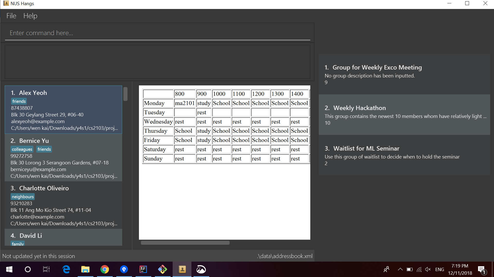

By: Team F11-4 Since: Jun 2016 Licence: MIT
- 1. Introduction
- 2. Quick Start
- 3. Features
- 4. Common
- 5. Security (Leslie)
- 6. Person
- 6.1. Adding a person:
add(ZhiWei) - 6.2. Listing all persons :
list - 6.3. Listing all groups a person is in :
list(Melodies) - 6.4. Editing a person :
edit - 6.5. Finding a person :
find(ZhiWei) - 6.6. Deleting a person :
delete - 6.7. Selecting a person :
select - 6.8. Listing entered commands :
history - 6.9. Undoing previous command :
undo - 6.10. Redoing the previously undone command :
redo - 6.11. Clearing all entries :
clear
- 6.1. Adding a person:
- 7. Timetable(Wen Kai)
- 8. Groups (Melodies)
- 8.1. Adding a group:
add_group(Short form/Alias:ag) - 8.2. Editing a group :
edit_group(Short form/Alias:eg) - 8.3. Locating group by name:
find_group(Short form/Alias:fg) - 8.4. Deleting a group :
delete_group(Short form/Alias:dg) - 8.5. Add a person to group :
register(Short form/Alias:r) - 8.6. List all persons of a group :
view_group(Short form/Alias:vg) - 8.7. Delete a person from group :
delete_member(Short form/Alias:dm)
- 8.1. Adding a group:
- 9. Time slots (Nigel)
- 10. FAQ
- 11. Command Summary
1. Introduction
NUS Hangs is for those who Wants to find a convenient time slot for the people who are joining his/her event. More importantly, NUS Hangs is optimized for those who prefer to work with a Command Line Interface (CLI) while still having the benefits of a Graphical User Interface (GUI). If you can type fast,NUS Hangs can get your contact management tasks done faster than traditional GUI apps. Interested? Jump to the Section 2, “Quick Start” to get started. Enjoy!
2. Quick Start
-
Ensure you have Java version
9or later installed in your Computer. -
Download the latest
nus.Hangs.jarhere. -
Copy the file to the folder you want to use as the home folder for Nus Hangs.
-
Double-click the file to start the app. The GUI should appear in a few seconds.
 -
Type the command in the command box and press Enter to execute it.
e.g. typinghelpand pressing Enter will open the help window.
-
The application launch in a state which grant read-only rights to the user. Some of the commands that are available in this state includes:
-
To make use of functions that add or edit information, the application requires the user to create and login to an account.
The default username is "admin" and the default password is "adminPassword".
To prevent unauthorized users from creating an account,createcan only be executed when a user is logged on.
An example in the context of an interest group: Only committee members should be allowed to make changes to the data while members are restricted to viewing rights.
-
Some example commands you can try:
-
list: lists all person -
add_group:add_group n/Family d/This is a family group description: adds a group named "Family" with the following description. -
delete_group:delete_group n/Family: deletes the Family group from NUS Hang. -
exit: exits the app
-
-
Refer to Section 3, “Features” for details of each command.
3. Features
Command Format
-
Words in
UPPER_CASEare the parameters to be supplied by the user e.g. inn/NAME_OF_FRIEND,NAME_OF_FRIENDis a parameter which can be used asadd n/John Doe. -
Items in square brackets are optional e.g
n/NAME [i/INDEX]can be used asn/John Doe i/1or asn/John Doe. -
Parameters can be in any order e.g. if the command specifies
n/NAME INDEX,INDEX n/NAMEis also acceptable.
4. Common
4.1. Viewing help : help
Format: help
4.2. Exiting the program : exit
Exits the program.
Format: exit
4.3. Saving the data
NUS Hangs data are saved in the hard disk automatically after any command that changes the data.
There is no need to save manually.
5. Security (Leslie)
5.1. Create an account: create
Create an account in the system. The password is case sensitive.
Format: create u/USERNAME pw/PASSWORD
(Coming in v2.0: Stores account details after closing and reopening app.)
|
At this stage, the user is required to create a new account each time they restart the application To prevent unauthorized users from creating an account, only admin or other logged in users can create account Admin Username: admin, Admin Password: adminPassword |
Examples:
-
create u/sampleUser pw/dontUseWeakPassword
5.2. Login to an account : login
Login into the system.
Users are required to login to execute most commands of the NUS Hangs
Format: login u/USERNAME pw/PASSWORD
Examples:
-
login u/username pw/dontUseWeakPassword
5.3. Encrypt password
Encrypts password so that it will not be stored as plain text. This function runs when dealing with user’s password.
5.4. Changing password: update_pw [coming in v2.0]
Change the user password, requires user to be logged in first.
Format: update_pw c/CURRENT_PASSWORD n/NEW_PASSWORD
Examples:
-
update_pw c/password n/newpass
6. Person
6.1. Adding a person: add (ZhiWei)
Short form/Alias: a
Adds a person to NUS Hangs
Format: add n/NAME [p/PHONE_NUMBER] [e/EMAIL] [a/ADDRESS] [t/TAG]…
-
Inputs in square brackets are optional
| A person can have any number of tags (including 0) |
Examples:
-
add n/John Doe p/98765432 e/johnd@example.com a/John street, block 123, #01-01 -
add n/Betsy Crowe t/friend e/betsycrowe@example.com a/Newgate Prison p/1234567 t/criminal -
add n/Nancy t/friend t/neighbour -
add n/James t/friend e/james@example.com t/classmates -
a n/Joji t/Singer
6.2. Listing all persons : list
Short form/Alias: l
Shows a list of all persons in the NUS Hangs.
Format: list
6.3. Listing all groups a person is in : list (Melodies)
Shows a list of all groups the person specified by his PERSON_INDEX is in.
Format: list PERSON_INDEX
(Remember to list first)
Example:
-
list 1
(lists all the groups that the person at index 1 is added to previously)
6.4. Editing a person : edit
Short form/Alias: e
Edits an existing person in the NUS Hangs.
Format: edit INDEX [n/NAME] [p/PHONE] [e/EMAIL] [a/ADDRESS]
[fl/STORED_LOCATION] [t/TAG]…
Examples:
-
edit 1 p/91234567 e/johndoe@example.com
Edits the phone number and email address of the 1st person to be91234567andjohndoe@example.comrespectively. -
edit 2 n/Betsy Crower t/
Edits the name of the 2nd person to beBetsy Crowerand clears all existing tags. -
edit 1 fl/C:\Users\admin\Downloads\cs2103\tiredAndSadness
Edits the stored location of the 1st person to beC:/Users/admin/Downloads/cs2103/tiredAndSadness/respectively.
6.5. Finding a person : find (ZhiWei)
Finds all persons in NusHangs, whose contain keywords provided by prefix(es).
Format: find [n/NAME…] [p/PHONE_NUMBER…] [e/EMAIL…] [a/ADDRESS…] [t/TAG…]
| Inputs in square brackets are optional |
Examples:
-
find n/alex
Returns any person having names withalex -
find n/Betsy Tim John
Returns any person having namesBetsy,Tim, orJohn -
find n/alex bernice t/friends
Returns any person havingalexandbernicein name andfriendsin tags -
find a/tampines p/12345678 87654321
Returns any person havingTampinesin address and12345678&87654321in phone
6.6. Deleting a person : delete
Short form/Alias: ds
Deletes the specified person from the NUS Hangs.
Format: delete INDEX
Examples:
-
list
delete 2
Deletes the 2nd person in the NUS Hangs. -
find Betsy
delete 1
Deletes the 1st person in the results of thefindcommand.
6.7. Selecting a person : select
Selects the person identified by the index number used in the displayed person list.
Format: select INDEX
Examples:
-
list
select 2
Selects the 2nd person in NUS Hangs. -
find Betsy
select 1
Selects the 1st person in the results of thefindcommand.
6.8. Listing entered commands : history
Lists all the commands that you have entered in reverse chronological order.
Format: history
|
Pressing the ↑ and ↓ arrows will display the previous and next input respectively in the command box. |
6.9. Undoing previous command : undo
Restores the NUS Hangs to the state before the previous undoable command was executed.
Format: undo
|
Undoable commands: those commands that modify the NUS Hangs’s content ( |
Examples:
-
delete 1
list
undo(reverses thedelete 1command) -
select 1
list
undo
Theundocommand fails as there are no undoable commands executed previously. -
delete 1
clear
undo(reverses theclearcommand)
undo(reverses thedelete 1command)
6.10. Redoing the previously undone command : redo
Reverses the most recent undo command.
Format: redo
Examples:
-
delete 1
undo(reverses thedelete 1command)
redo(reapplies thedelete 1command) -
delete 1
redo
Theredocommand fails as there are noundocommands executed previously. -
delete 1
clear
undo(reverses theclearcommand)
undo(reverses thedelete 1command)
redo(reapplies thedelete 1command)
redo(reapplies theclearcommand)
6.11. Clearing all entries : clear
Clears all entries from the NUS Hangs.
Format: clear
7. Timetable(Wen Kai)
7.1. Adding a timetable: add_timetable
Short form/Alias: at
User to download timetable template first before using download_timetable INDEX and change csv at the location.
Reload page by clicking on another person and then click on the person again
Or right click on timetable and select the reload page option(Not working).
Format: add_timetable INDEX [fl/FILE_LOCATION]
Example (user does not provide a file path):
-
add_timetable 1 -
add_timetable will add timetable from the given csv file from the person specified by the
INDEXfrom file location if file location is present. If not, NUSHangs will throw an error message if the file cannot be found from the given (typed) file path -
Will not be able to add if timetable is not present in the stored location of person specified by
INDEX
Example (user provides a file path):
-
add_timetable 1 fl/C:\Users\timetable\timetable.csv -
FOR WINDOWS:
-
add_timetable fl/C:\Users\timetable\timetable.csv(absolute pathing) or -
add_timetable fl/timetable.csv(relative pathing - if you save the .csv file in the same directory as the .jar file).
-
-
FOR MAC:
-
add_timetable 1 fl//FILEPATH(absolute pathing - note the double slashes) or -
add_timetable 1 fl/timetable.csv(relative pathing).
-
-
add_timetable will add timetable from the given csv file.
-
the first row and first column should be left alone.
-
the top left corner entry can be edited (the blank space at the top of Monday in the first column).
-
can only edit in given rows and columns of the timetable.
-
any invalid timetable will be ignored.
-
example of correctly formatted timetable is given below

7.2. Editing a timetable: edit_timetable
Short form/Alias: et
Edits a timetable timeslot of the timetable from the person specified by the INDEX.
Format: edit_timetable INDEX day/DAY timing/TIMING [m/DETAILS]
Example:
-
edit_timetable 1 day/wednesday timing/0900 m/do cs2103
Example(User clear event at timeslot):
-
edit_timetable 1 day/wednesday timing/0900
7.3. Download timetable : download_timetable
Short form/Alias: dlt
Download a timetable from the person specified by the INDEX to the stored folder from the person specified by the INDEX as a csv file.
Format: `download_timetable INDEX `
Examples:
-
download_timetable 1
7.4. Deleting a timetable : delete_timetable
Short form/Alias: dt
delete csv file of the timetable from stored location from the person specified by the INDEX and adds a default timetable to the person specified by the INDEX.Resets the timetable of the person if there is no timetable in the stored location from the person specified by the INDEX.
Format: delete_timetable INDEX
Examples:
-
list_timetable
delete_timetable 2
Deletes the 2nd timetable in NUS Hangs. -
find Betsy
delete_timetable 1
Deletes the 1st timetable in the results of thefindcommand.
8. Groups (Melodies)
8.1. Adding a group: add_group (Short form/Alias: ag)
Add a group to the System
Format: add_group n/GROUPNAME [d/GROUPDESCRIPTION]
Examples:
-
add_group n/happyfriends d/a group of happy friends -
`add_group n/Bestfriends
8.2. Editing a group : edit_group (Short form/Alias: eg)
Edit a group’s details. OLDGROUPNAME must be entered. There must be at least 1 field non-empty. If field is empty, system assumes that the field remains unedited.
Format: edit_group OLDGROUPNAME [n/NEWGROUPNAME] [d/NEWGROUPDESCRIPTION]
Examples:
-
add_group n/happyfriends d/a group of happy friends -
edit_group happyfriends n/sadfriends d/sad because of cs2103(Changes the name of group from "happyfriends" to "sadfriends" and description) -
edit_group sadfriends d/very very miserable(Changes only description.)
8.3. Locating group by name: find_group (Short form/Alias: fg)
Find groups whose names contain any of the given keywords
Format: find_group KEYWORD [MORE_KEYWORDS]
-
Only the group name is searched.
-
Only full words will be matched e.g.
Familywill not matchFamilies
Examples:
-
find_group John
Returnsjohn familyandJohn House -
find_group Betsy Tim John
Returns any group having namesBetsy,Tim, orJohn
8.4. Deleting a group : delete_group (Short form/Alias: dg)
Delete a group in the system by name
Format: delete_group n/GROUPNAME
Examples:
-
delete_group n/happyfriends
8.5. Add a person to group : register (Short form/Alias: r)
Adds a person using the person index to a group if group exists
Format: register PERSON_INDEX n/GROUP_NAME
-
Remember to
listbefore using register command.
Examples: (Adds the first person in the displayed person panel to the group happyfriends)
list
register 1 n/happyfriends
8.6. List all persons of a group : view_group (Short form/Alias: vg)
Displays a list of all persons in a group
Format: view_group n/GROUP_NAME
Examples: (lists the persons added to group happyfriends in the displayed person list)
-
` view_group n/happyfriends`
8.7. Delete a person from group : delete_member (Short form/Alias: dm)
Delete a person from a group using person index displayed with view_group.
Format: delete_member PERSON_INDEX n/GROUP_NAME
-
Remember to
view_groupbefore using register command. -
The PERSON_INDEX is the index of the displayed person list AFTER
view_groupcommand is performed.
Examples: (deletes the 1st person displayed in view_group command.)
-
view_group n/happyfriends -
delete_member 1 n/happyfriends
9. Time slots (Nigel)
9.1. List all time slots at which everyone of a group is available : view_slots_all
Short form/Alias: va
List all of the time slots at which everyone in the group is available
Format: `view_slots_all n/GROUP_NAME `
Examples:
-
view_slots_all n/happyfriends
9.2. List all time slots in order in terms of number of people available within the group: view_slots_ranked
Short form/Alias: vr
List all time slots of a group in descending order in terms of the number of people available, and then in ascending order in terms of timing. The additional parameter specifies the required minimum number of people available
Format: view_slots_ranked n/GROUP_NAME num/NUM_REQ
Examples:
-
view_slots_ranked n/happyfriends num/4
10. FAQ
Q: How do I transfer my data to another Computer?
A: Install the app in the other computer and overwrite the empty data file it creates with the file that contains the data of your previous NUS Hangs folder.
11. Command Summary
-
help :
help -
login :
login u/USERNAME pw/PASSWORD
e.g.login u/admin pw/adminPassword
(remember to login using admin account in above example before being able to create new accounts/perform other functions!) -
create :
create u/USERNAME pw/PASSWORD
e.g.create u/user pw/strongpass -
add:
add n/NAME [p/PHONE_NUMBER] [e/EMAIL] [a/ADDRESS] [t/TAG]…Inputs in square brackets are optional
e.g.add n/John Doe p/98765432 e/johnd@example.com a/John street, block 123, #01-01 -
edit:
edit INDEX [n/NAME] [p/PHONE] [e/EMAIL] [a/ADDRESS] [fl/STORED_LOCATION] [t/TAG]…
e.g.edit 1 p/91234567 e/johndoe@example.com -
find:
find [n/NAME…] [p/PHONE_NUMBER…] [e/EMAIL…] [a/ADDRESS…] [t/TAG…]
e.g.find a/tampines p/12345678 87654321 -
delete:
delete INDEX
e.g.delete 1 -
list: Listing all persons
eg.list -
list PERSON_INDEX: List all the groups the person is in
e.g.list 1 -
undo
-
redo
-
history: Lists all the commands that you have entered in reverse chronological order.
-
add_timetable:
add_timetable INDEX [fl/FILE_LOCATION]
e.g.add_timetable 1 fl/C:\Users\timetable\timetable.csv -
edit_timetable:
edit_timetable INDEX day/DAY timing/TIMING [m/DETAILS]
e.g.edit_timetable 1 day/wednesday timing/1800 m/do cs2103 -
download_timetable :
download_timetable INDEX
e.g.download_timetable 1 -
delete_timetable :
delete_timetable INDEX
e.g.delete_timetable 3 -
add_group:
add_group n/GROUPNAME [d/GROUPDESCRIPTION]`
e.g.add_group n/happyfriends d/a group of happy friends -
edit_group :
edit_group OLDGROUPNAME [n/NEWGROUPNAME] [d/NEWGROUPDESCRIPTION]
e.g.edit_group happyfriends n/sadfriends d/sad because of cs2103 -
find_group :
find_group KEYWORD [MORE_KEYWORDS]
e.g.find_group Family Friends -
delete_group :
delete n/GROUPNAMR
e.g.delete_group n/Family -
view_group : View a group’s members
view_group n/GROUPNAME+ e.g.view_group n/Family -
register
register PERSON_INDEX n/GROUP_NAME
e.g.register 1 n/Family -
delete_member: Always use view_group before doing delete_member
delete_member PERSON_INDEX n/GROUP_NAME
e.g.view_group n/Family
delete_member 1 n/Family -
view_slots_all: View all common time slots between everyone in the group
view_slots_all n/GROUP_NAME
e.g.view_slots_all n/Family
shows all the time slots where every person in Family group is free. -
view_slots_ranked: View time slots ranked with at least`NUM_REQ` people free on these time slots
view_slots_ranked n/GROUP_NAME num/NUM_REQ
e.g.view_slots_ranked n/Family num/2
shows all the time slots where at least 2 persons in the Family group are free.